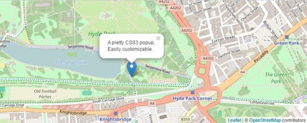
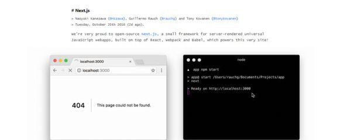

2016 年 50 个最佳的轻量级 JavaScript 框架和库
回顾今年已发布的 JS 框架和库，我们针对地筛选了一些能够提供直接和具体功能的免费 JavaScript 插件和库，与大家分享。它们可不是臃肿的一站式框架，而是一些轻量级，并能够帮助你更快、更容易地进行网页设计与开发的实用型框架。
正如你期望的，文中的一些插件可用来创建滑块、图片库、响应式菜单、弹出式窗口以及许多其他常见的组件。同时，你也可以发现一些能够提供独特功能的插件，像旁注工具、GIF 预览、动画图标等。

Leaflet.js 是一个开源的移动友好交互式地图 JavaScript 库。体积仅有 33 KB.
3.Lory
Lory 是一个由 Vanilla JavaScript 编写的拥有触摸功能的简约滑块。
CurrencyFormatter.js 是一款简单实用的纯 JS 格式化货币库。它支持 155 种不同国家的货币格式，并且 gzip 压缩后仅有 7KB .
5.Arc
Arc（Atomic React）是一个基于原子设计模式的 React 应用程序入门套件。
6.Egjs
Egjs 是一个基于 jQuery 的具备 UI 交互，效果和实用程序的小型组件库。
7.Shave.js
Shave 是一个用于截断 Html 元素中文本的现代 JavaScript 插件。
8.Next.js

Next.js 是一个用于服务器渲染 React 应用程序的简约框架。
jQuery Linechart 是一个用于构建简单图表的新型 jQuery 插件。
10.Blueprint
Blueprint 是 React UI 组件的集合，它涵盖了 Web 上的常见界面元素、模式以及交互。
11.Tabulator
Tabulator 是一个易用的交互式 jQuery 表单生成插件。
baguetteBox.js 是一个简单、易用的响应式 Lightbox 图片库。它支持移动端上触滑动手势操作。同时，它还是用纯 JavaScript 编写的。
13.ScrollReveal
无论是为桌面，或是移动浏览器，ScrollReveal 插件都可以轻松、快速的帮助你为其创建页面滚动显示动画。
14.Marginotes
Marginotes 是一款使用 jQuery 实现的添加旁注插件。它能够使用 HTML 属性中提供的文本向边距添加相应的注释。如果 jQuery 不是你的“菜”，它还有个不含 jQuery 的版本。
15.Loud Links
Loud Links 是一个轻量级 JavaScript 库，用于向您的网站添加交互音频。它通过创建 HTML5 音频元素，来播放 MP3 或 OGG 格式的音频文件。
16.Bricks.js
Bricks.js 是一个用于固定宽度元素的快速堆砌布局生成器。
17.MediumEditor
MediumEditor 是一个用 Vanilla JavaScript 编写的，轻量级用于模仿 Medium 的开源编辑器。同时，它还有一些可选的 Mediaditor 扩展与主题。
18.Philter
无论是作为一款 jQuery 插件或是 Vanilla JS 框架，Philter 均提供了通过 HTML 属性来控制 CSS 滤镜的方法。
SuperEmbed.js 是一个 JavaScript 库，它可检测出网页上的内嵌视频（涉及 YouTube、Vimeo、Vine、VideoPress、DailyMotion 等）并使他们变成响应式元素。
20.Substance
Substance 是一个基于 Web 内容编辑的 JavaScript 库。它为你提供了创建自定义文本编辑器，以及基于 Web 发布系统所需的所有工具。
21.List.js
List.js 是一个轻量级、快速的 Vanilla JavaScript 脚本。它能为列表、表或任何 HTML 生成具备搜索、排序、过滤以及灵活性的列表。
22.jqGifPreview
jqGifPreview 是一个简单的 jQuery 插件，用于创建 GIF 预览。类似你在 Facebook 上看到的那样。
Datedropper.js 是一个 jQuery 插件，它提供了一个简便的方法来管理输入区域的日期。
24.jfMagnify
jfMagnify 是一个 jQuery 插件，它可以为任何 HTML 元素创建放大镜效果，而不仅仅是图像。
jQuery formBuilder 是一个可视化的 jQuery 插件。你可以用快速拖放的方式来创建表单。
26.Popper.js
Popper.js 是一个轻量级（压缩后4kb）库，用于管理 poppers，tooltips 和 popovers . 只需要一行代码，你就可以快速、简单的对 tooltips 进行定位。
Image Blur Plugin 是一个轻量级用于图像模糊的跨浏览器 jQuery 插件。
InlineTweet.js 能帮助你轻松地从网页的任何文本上，创建推特表格的分享。而你只需要在带有data-inline-tweet的容器中填好推特的分享文本即可。
29.iMissYou.js
iMissYou.js 是一个轻便小巧的 jQuery 插件。它用于当用户离开你的网页时，更改网页的标题和图标。
30.SweetAlert2
SweetAlert2 是一个漂亮、可定制的 JS 弹窗插件，它用于替代浏览器默认的弹窗效果。
31.Turntable.js

Turntable.js 是一个响应的 jQuery 滑块插件。当你的鼠标(或手指)扫过容器时会产生翻转效果。
32.Force.js
Force.js 是一个 JavaScript 库，它可以轻松地让 HTML 元素在网页上产生动画、页面滚动的效果。
33.Push.js
Push.js 是一个用于启动和运行 Javascript 桌面通知的跨浏览器解决方案。
34.Bideo.js
Bideo.js 是一个可轻松为网页添加全屏背景视频的 JS 库。
Microlight.js 是一个适用于任何编程语言的轻量级代码高亮库，使用它后可大大提高代码的可读性。
Algolia Places 是一个易用的 JavaScript 库。当你在网站上使用地址搜索时，它可以提供一种快速自动填充地址的功能。
37.Flatpickr
Flatpickr 是一款轻量级的日期选择控件。它由 Vanilla JavaScript 所编写。
38.Slidebars
Slidebars 是一个轻量级 jQuery 框架，它用于创建具有移动端应用样式的 off-canvas 菜单界面和侧边栏。
39.anime.js
anime.js 是一个轻量级、灵活的 JavaScript 动画库。它适用于 CSS、SVG、DOM 属性和 JS 对象。
40.Cleave.js
Cleave.js 是一款简单插件，用于输入框内容的格式化。
41.Skippr
Skippr 是一个超简单、轻量级的 jQuery 幻灯片插件。
42.iziModal.js
iziModal.js 是一个融合优雅、响应式、灵活、轻量级于一身的现代 jQuery 插件。
Lightgallery.js 是一个功能齐全的 JavaScript Lightbox 库，同时它没有任何依赖。
Progressively 是一个用于逐步加载图片的 JavaScript 库。由于它完全用 JavaScript 所编写，所以它不依赖于像 jQuery 这样的第三方库。同时，它的体积也超级小（gzip 压缩后<1.2kB） 当用户浏览到页面上加载的图片时，它能够有效的节省带宽和服务器请求。
45.Features.js
Feature.js 是一个快速、简单、轻量级的浏览器功能检测库。它没有任何的依赖，并且 gzip 压缩后仅有1kb.
46.UAParser.js
UAParser.js 是一个轻量级基于JavaScript 的 User-Agent 字符串解析库。用于识别 Web 浏览器的详细类型、布局引擎、操作系统、CPU架构和设备类型/模型。它支持 browser 和 node.js 环境，也可作为 jQuery / Zepto 的插件，Bower / Meteor 的包，以及 RequireJS / AMD 的模块。
47.Monkberry
Monkberry 是一个快速，小巧(1kb)的用于构建 Web 用户界面的 JavaScript 库 。
viewScroller.js 是一个小巧易用的解决方案，它可以帮助你创建全页滚动网站。
Appmetrics.js 是一个用来测量 Web 应用程序的小型 JS 库，并把结果报告发送到 Google Analytics 上。
50.Senna.js
Senna.js 是一个轻量级、快速的单页面应用程序引擎，它提供了几个低级的API，你可以借助它来构建现代的 Web 应用程序。同时，它压缩后的大小只有 15 KB，没有任何依赖。

微信打賞

支付寶打賞